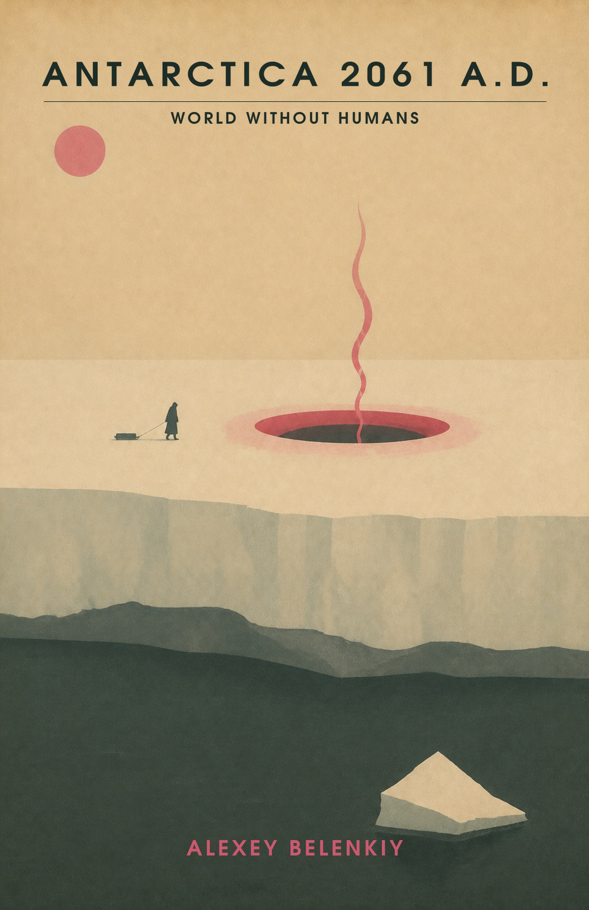
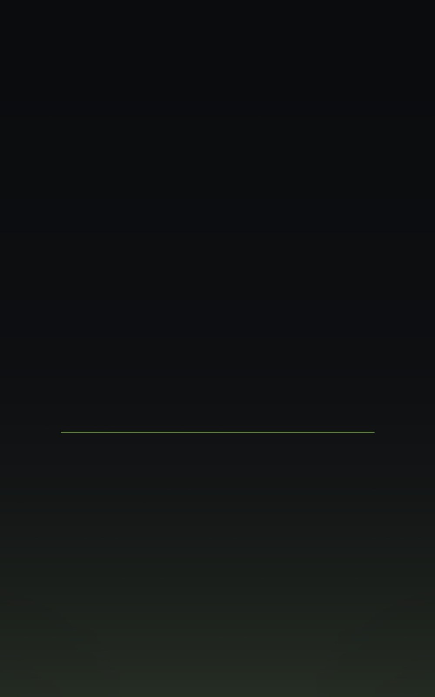
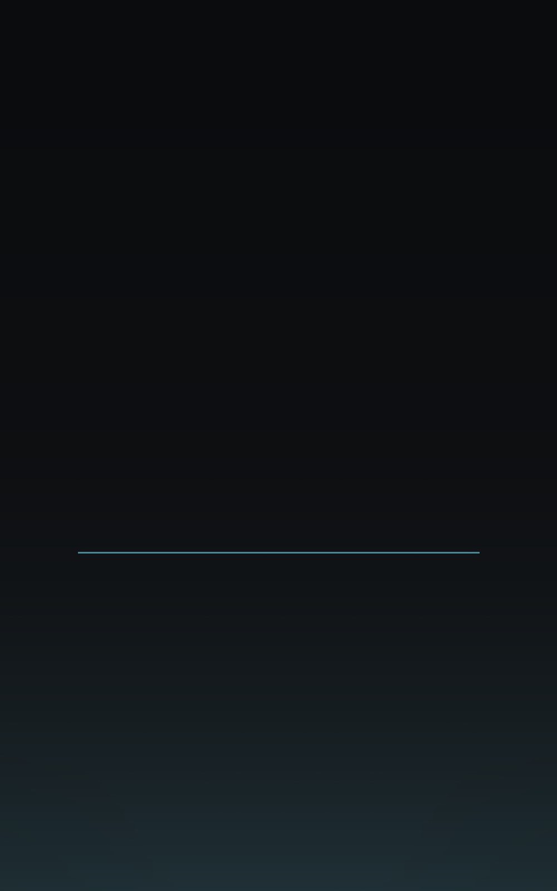
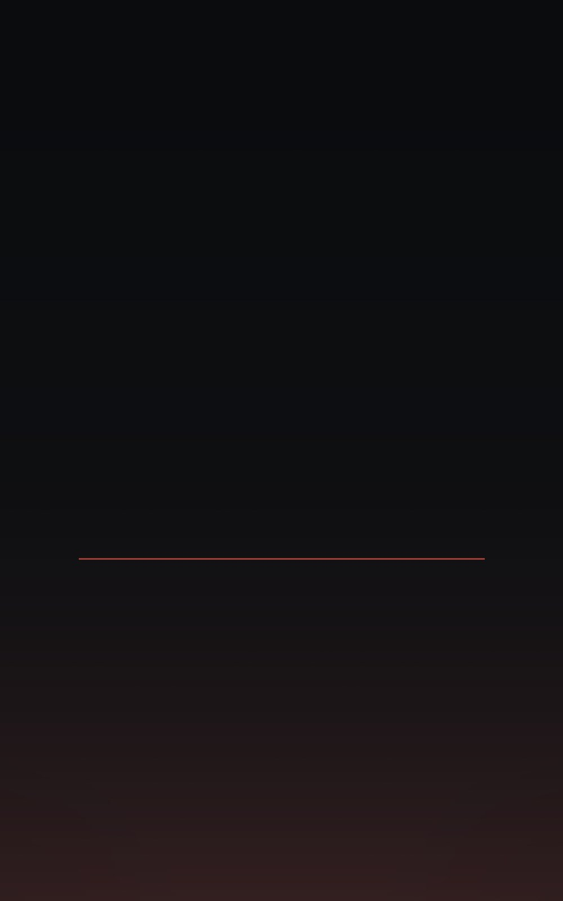
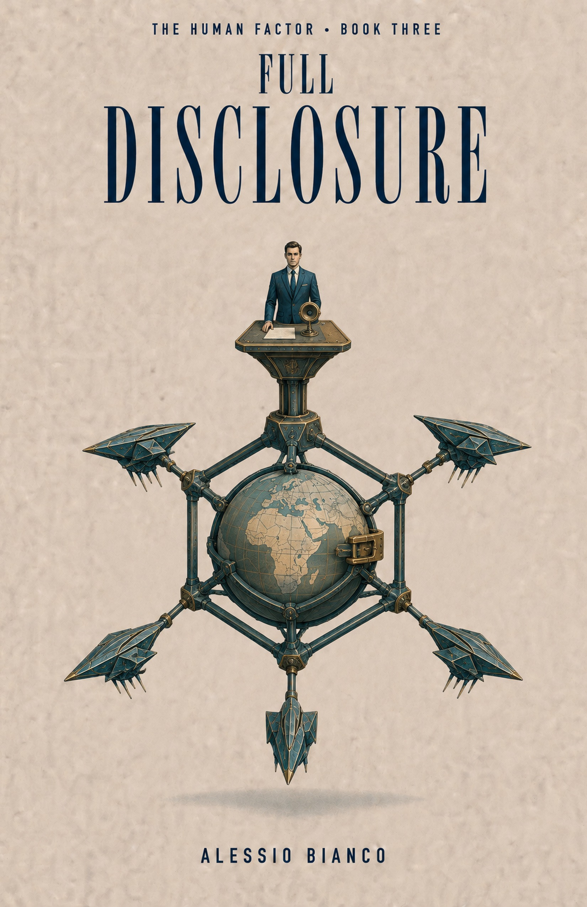

Venice 2068 A.D.
Fue construido para catalogar una ciudad ahogada — no para enamorarse.
Orb & Ink · Libros de ciencia ficción
43 libros en 12 mundos — para leer, escuchar y ver.
Fue construido para catalogar una ciudad ahogada — no para enamorarse.

La gente ya no está. La ciudad guardó un rastro de pistas.

¿Qué puede llevarse un erudito de una tumba, cuando la tumba se lo entrega?

La ciudad está muerta. Los trenes siguen llegando puntuales.

Para armar la última arma, gana primero el consentimiento de los muertos.

Por primera vez, llegó antes de que el mundo terminara.

Un paraíso que vuelve a crecer. Una orden de regreso. Un testigo que ha empezado a querer.

El último diario viaja más temprano que todos.

La evaluaron en cuatro décimas y la apartaron. Fue su primer error.

Todo milagro tiene factura. Ella obliga a la corte a mirar quién paga.

Toda vena del cielo acaba en alguna parte. ¿Qué se le debe a un dios hambriento?

El primer contacto es un aviso de retirada. La humanidad tiene noventa días para recurrirlo.

Cuarenta y cuatro civilizaciones fabricadas. Una sola clase. Un demandado muerto.

Una cláusula libera la galaxia. Nadie pregunta qué más anula.

En la Verge, la crueldad tiene masa. Un asesinato hunde una casa. Y alguien está hundiendo una ciudad.

El resto de un mundo muerto está a tres años. La sociedad que no puede hacer daño debe decidir a quién le está permitido ser un monstruo.

El hombre más bondadoso del mundo está construyendo la peor noche de la historia.

Las estrellas se están apagando. Sin explosiones. Sin restos. Alguien tiene que ir a mirar.

El universo ha dejado de expandirse. La última expedición está en el camino de la respuesta.

Cada estrella desaparecida señalaba el mismo lugar. Los últimos humanos han seguido el mapa.

En las Zonas nunca ocurre nada al azar. Los arrabales funcionan con la desgracia que lo garantiza.

Los arrabales han aprendido a devolver la desgracia a sus firmantes.

La causa y el efecto ya no son colegas. Tres maneras de volver a amañar el mundo, cada una al precio de un niño.

Las grandes casas no mueren. Se hunden — y gobiernan la superficie desde siglos más abajo.

Lo profundo ha empezado a responder cartas. Cada respuesta sabe cosas que solo los muertos sabían.

Dos inquilinos por cuerpo. Días y noches, entregados en el Pestillo. Nunca podrás conocer al otro.

Has leído el día. Lee ahora las mismas semanas, de noche.

El relevo sangra. Alguien está aflorando sin contrato de arrendamiento alguno.

En Barrow, la casta es altitud. Luego un ingeniero nacido en lo hondo encuentra la piedra que vuelve negociable la física.

La contrataron para robar un cubo negro. Ahora la luz se apaga dondequiera que se detenga.

Al final de la luz de las estrellas la regla es simple: catalogarlo todo, no tocar nada — y, cuando pida un lector, negarse.

Las Vísperas han llegado para cantarle a la era hasta dormirla — mil años antes de tiempo.

El mar baja — un palmo al año, luego más deprisa. Alguien se está llevando el agua.

Aquí el amanecer es un muro de fuego que rodea el mundo para siempre. La vida solo existe en la noche que marcha.

Nueve días en la corte le costarán a la delegación tres años de la guerra de fuera.

Todas las guardias están despiertas a la vez, por primera vez en la travesía. Un asedio es una válvula cerrada. Una hambruna es una firma.

El firmamento cede a lo largo de la costura — y una galaxia nueva se alza sobre los Montes del Linde de todos los reinos a la vez.

Los alienígenas aterrizaron en un restaurante de carretera en quiebra y nombraron al cocinero del turno de noche embajador de la humanidad. Su civilización es perfecta. Tiene una omisión.

Apostó la Tierra a una rebelión de nueve siglos — sin preguntar contra qué se rebelan, exactamente, los rebeldes.

Si no puedes impresionar al crítico, haz que devuelva el plato.

Secuestrado en plena prueba de conducción. Vender duro, cerrar cada día, o ser cerrado en la fecha prevista.

En la Tierra vendía chatarra. Ahora un imperio puja por él.

Falsificó las pruebas que justificaron la invasión. Ahora dice la verdad.
Nada en la estantería coincide. Borra los filtros.
Abre el libro — el mundo está dentro.
Entrar en los mundos